Dashboard
Battery, storage, memory, display, Android version, security patch and root status at a glance.
Apps, files, terminal, Logcat, performance, screen mirroring and wireless connection: all of ADB in a single window, without typing a single command.
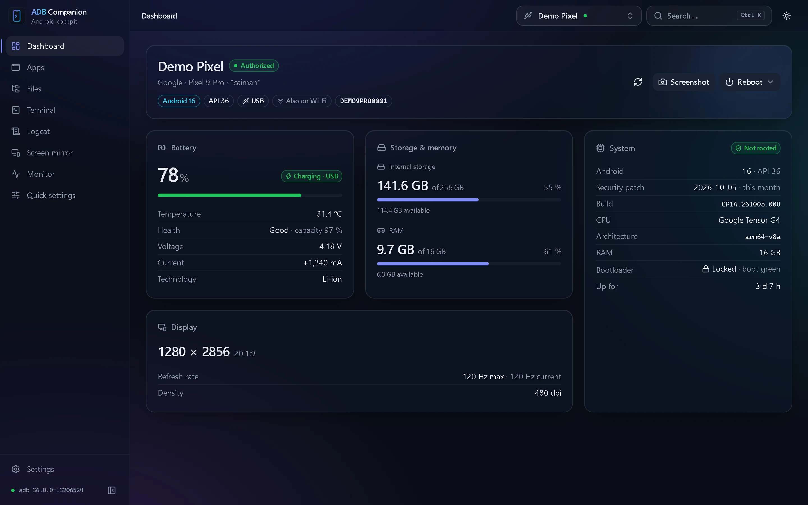
One tool for Android phones, tablets and TVs, over USB or Wi-Fi.
Battery, storage, memory, display, Android version, security patch and root status at a glance.
Install APK, APKS and XAPK by drag and drop, manage permissions, disable, clear or uninstall in bulk.
Dual-pane computer ↔ device explorer, fast transfers with progress, preview and root mode.
Full interactive shell in tabs, root tab, ready-made macros and your own shortcuts.
Live logs, filters by level, tag, app or regular expression, pause and export.
Per-core CPU, memory, temperatures and battery in real time, plus a process manager.
View and control the device with scrcpy, installed for you; recording and a lighter Wi-Fi profile.
QR code or pairing code, automatic discovery, one-click USB → Wi-Fi switch and automatic reconnection.
Screenshots made with demo devices: your data stays yours.
The full list, with icons, sizes and filters, loads in seconds.
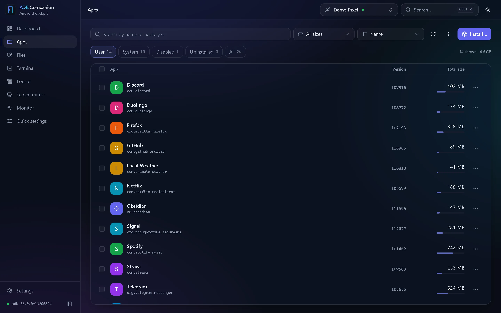
The explorer speaks ADB's sync protocol directly: fast, reliable, no detour through the shell.
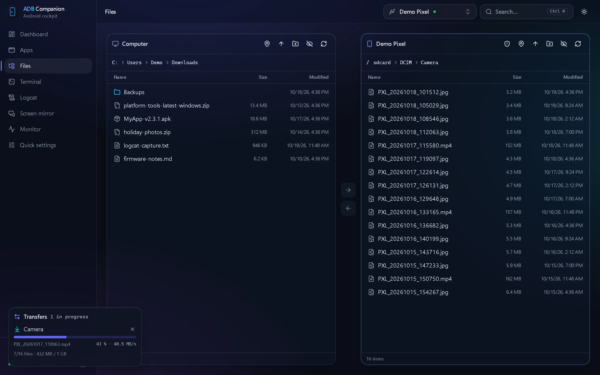
Colors, completion, full-screen programs and resizing: the terminal behaves like it does on the device.
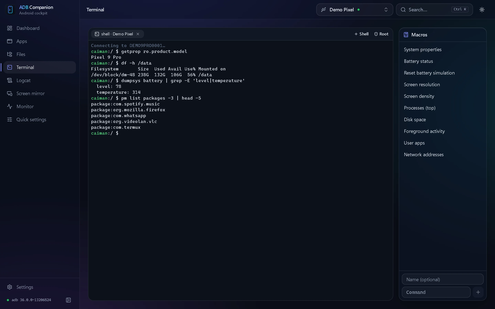
Smooth at any rate, with a real pause: nothing is kept while it's on.
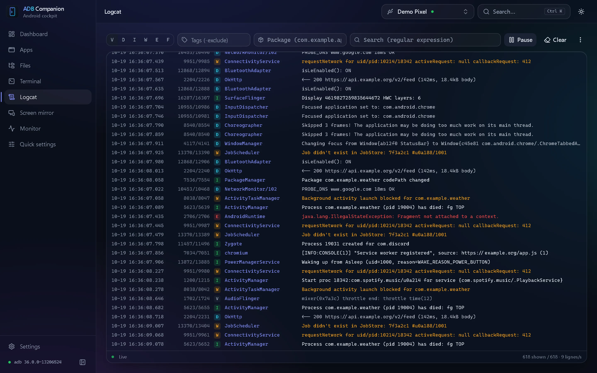
Charts over 1 to 30 minutes, sampled every second or less often.
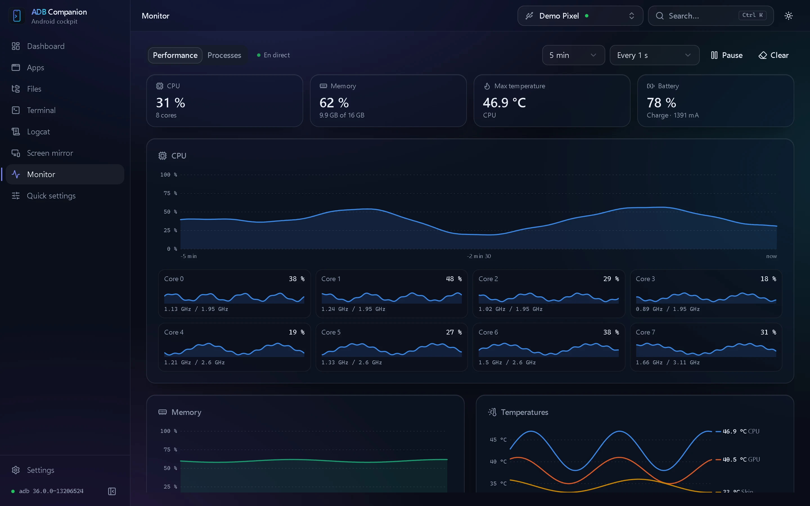
Wireless ADB without remembering any address or port.
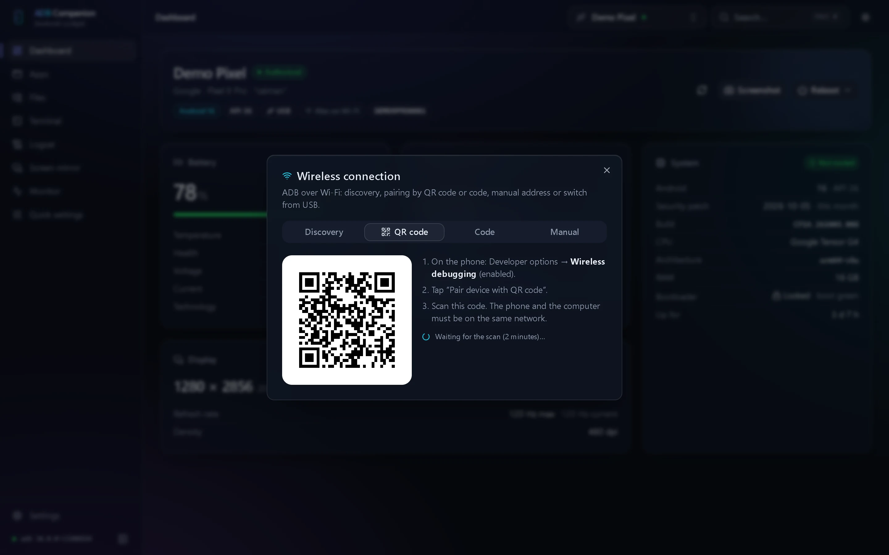
ADB Companion installs and configures scrcpy for you.
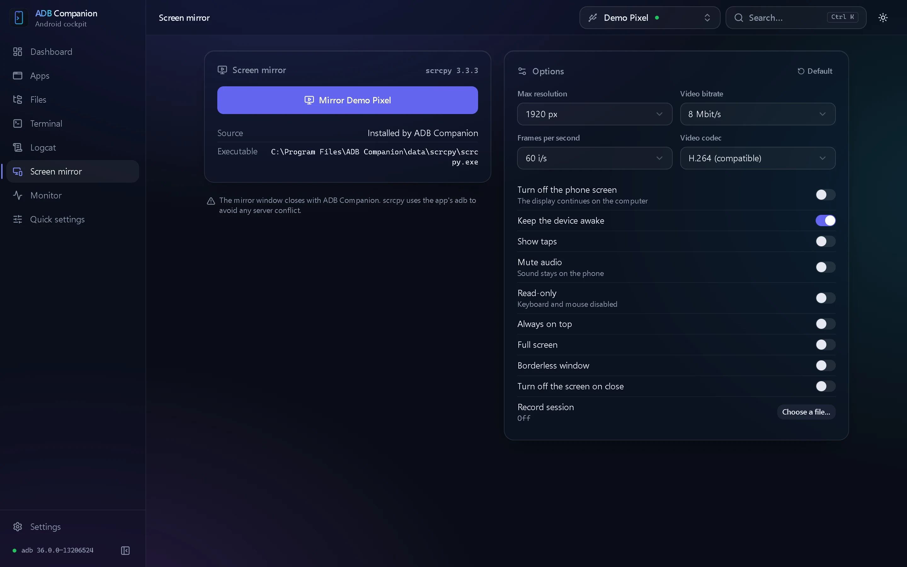
Every original value is remembered: one click on "Restore" and the device is back to how it was.
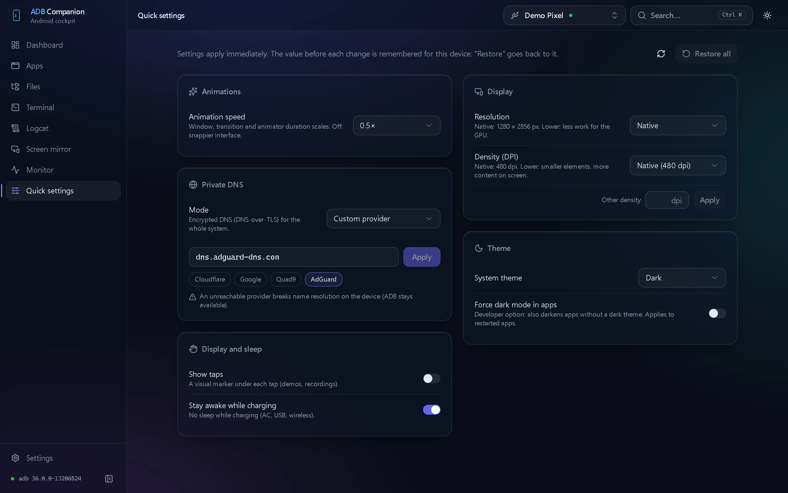
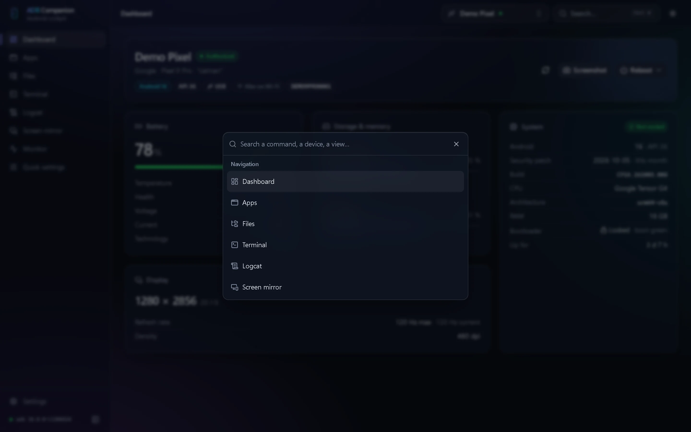
The theme follows your system or can be picked in the settings; the glass effect can be turned off on modest machines.
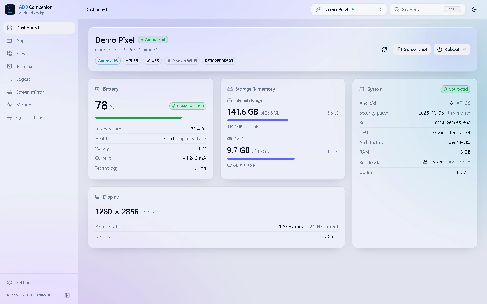
Install it, plug in your device with USB debugging on: you're ready.
Yes: the installer isn't signed with a developer certificate yet, so SmartScreen doesn't know it. Click "More info", then "Run anyway". Updates, on the other hand, are signed and verified by the app before they're installed.
The app isn't notarized by Apple yet. Right-click ADB Companion in the Applications folder, choose "Open" and confirm. Pick the aarch64 file for an Apple Silicon Mac (M1 and later), x64 for an Intel Mac.
No. ADB Companion finds an existing ADB (Android SDK, PATH…) and otherwise offers to download Google's official Platform-Tools in one click. scrcpy, for screen mirroring, installs the same way.
In Android's settings, open "About phone" and tap "Build number" seven times to unlock Developer options. Turn on "USB debugging" there (and "Wireless debugging" for Wi-Fi), plug the device in, then accept the computer's key on its screen.
No. Root is only used for a few advanced features (browsing the whole file system, the terminal's root tab, clearing an app's cache), when your root manager grants it to the shell.
On Windows the install is "portable": settings, logs and downloaded tools live in a data folder next to the app (the installer offers to remove it on uninstall). The app sends no data: it only goes online to check for updates and, when you ask, to download ADB or scrcpy.
A pre-release published for testing: early features, possible bugs. In Settings → Updates, the "Experimental versions" option lets you receive them automatically.
Your user needs access to Android USB devices: install your distribution's udev rules package (often android-udev-rules or android-sdk-platform-tools-common), add yourself to the group it names (plugdev or adbusers), then plug the device in again.